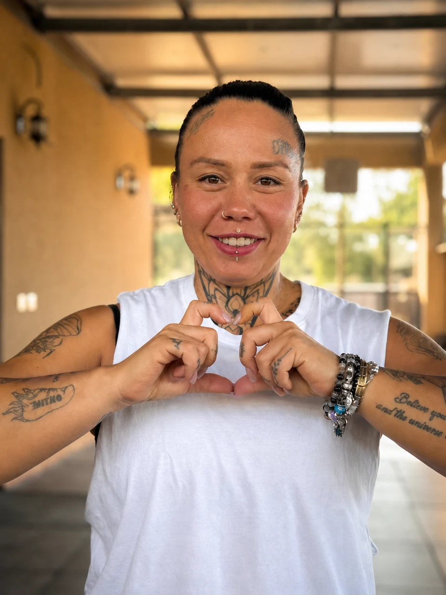
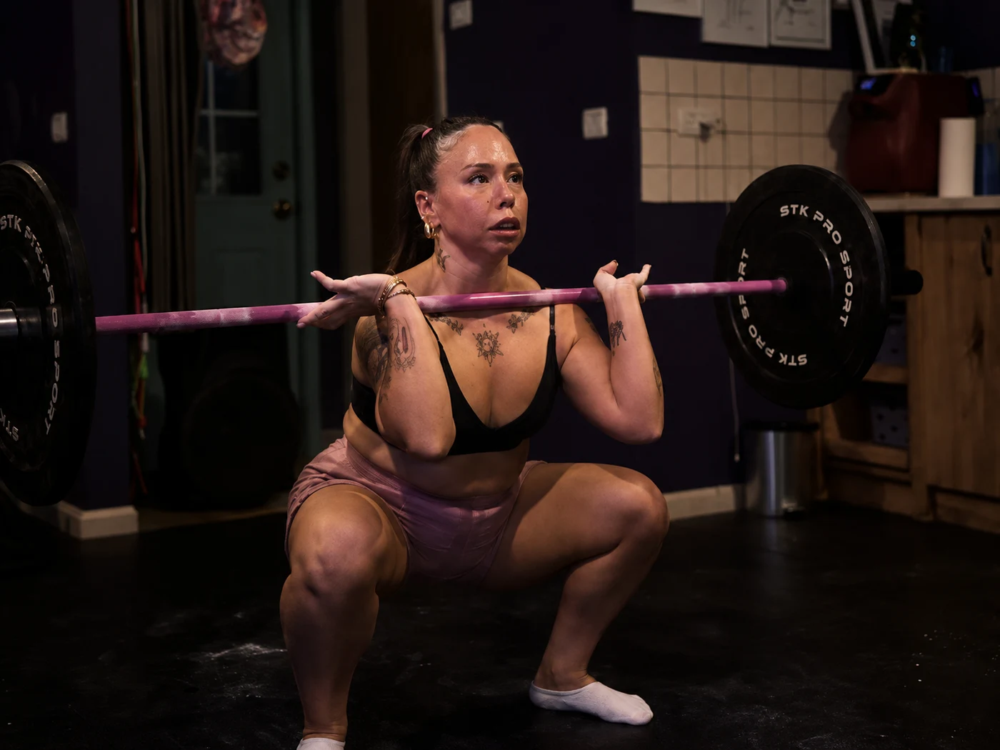
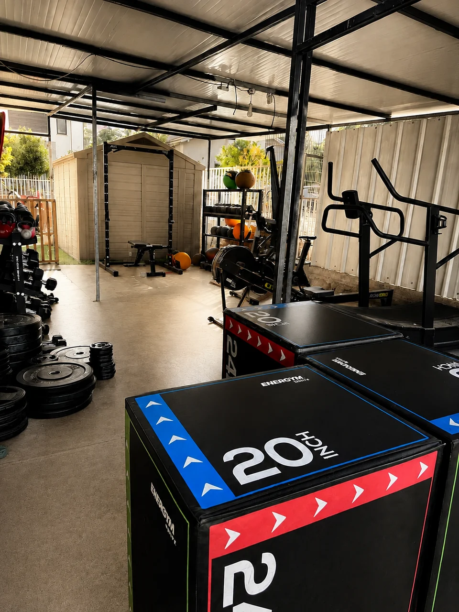
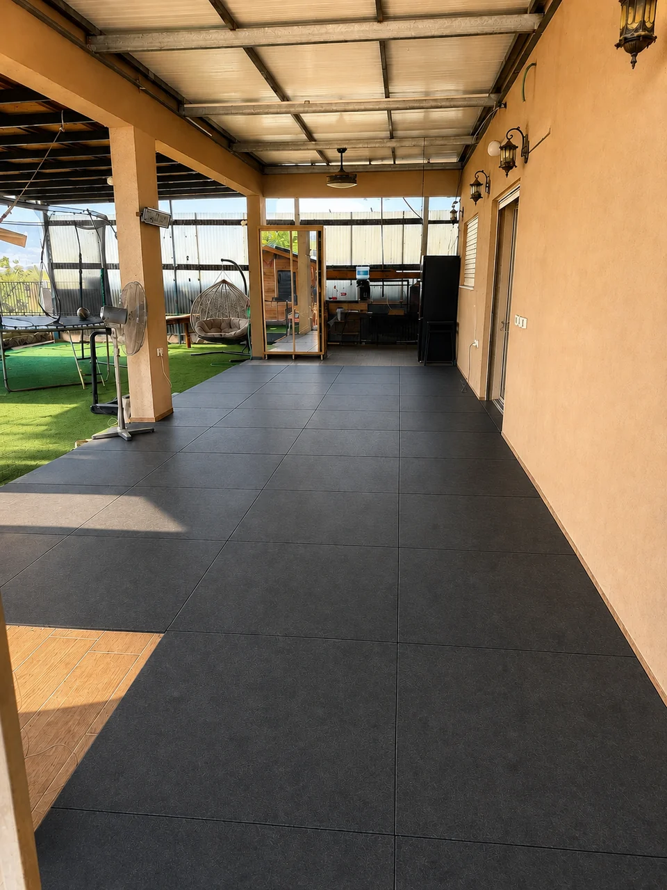
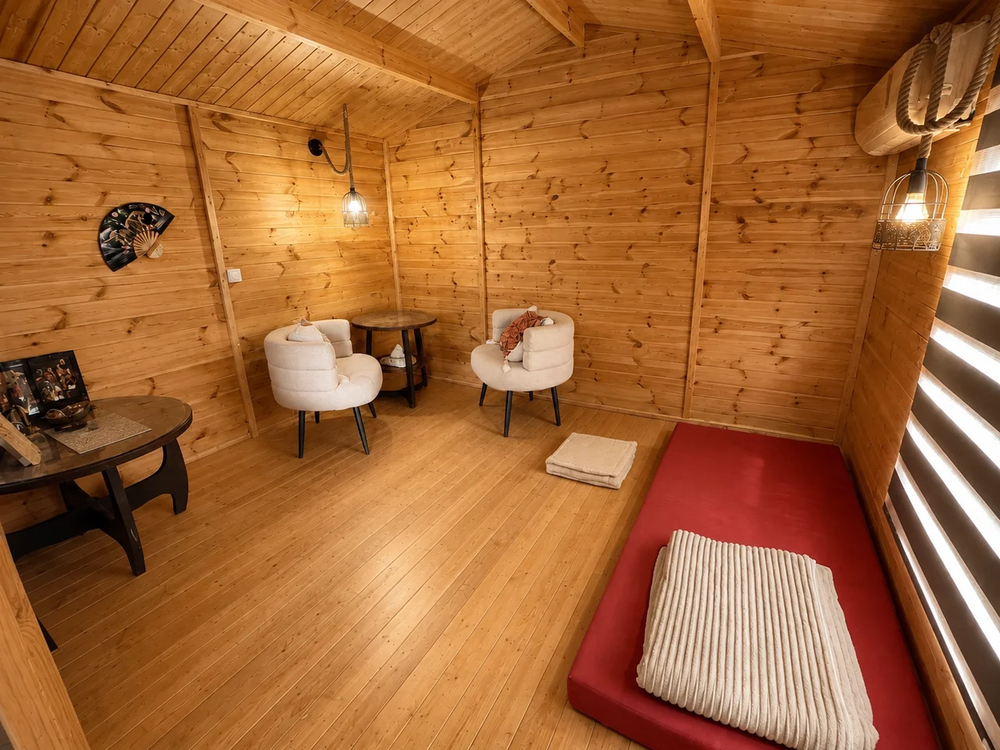
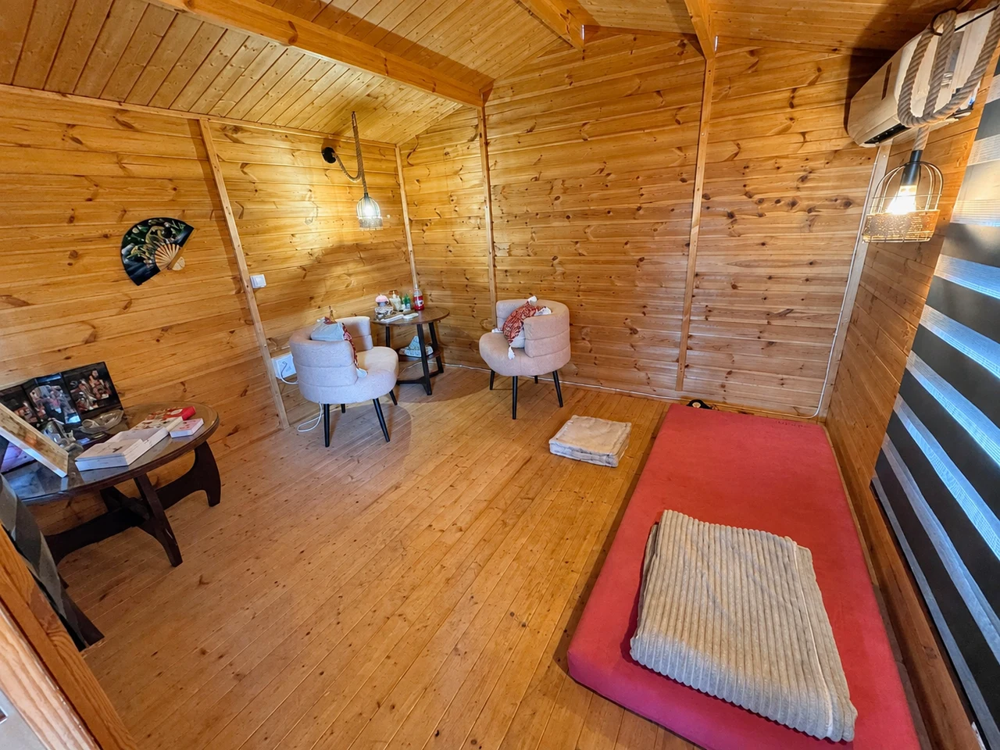

אימוני כוח
בונים כוח, לומדים טכניקה ומתקדמים בקצב שלכם.
גלו את אימוני הכוח MamAlina
MamAlinaבונים כוח, לומדים טכניקה ומתקדמים בקצב שלכם.
גלו את אימוני הכוחעוצרים, נושמים ויוצרים מרחב לעבודה פנימית.
גלו את עולם הנשימה
אני אוהבת לעבוד עם אנשים. לראות אותם לומדים משהו חדש על עצמם, מעיזים, מתקדמים, ולפעמים פשוט מצליחים לעצור ולהקשיב.
ב-MamAlina אני רוצה לפרק את האמונות המגבילות ואת הטמפלטים הישנים שגדלנו איתם — כל אותם דברים שאנחנו עושים על אוטומט, כי התרגלנו לחשוב שככה אנחנו או שככה צריך.
באימוני הכוח עושים את זה דרך הגוף — לומדים לעבוד נכון, להתחזק ולגלות שאנחנו מסוגלים ליותר. במפגשי הנשימה והריברסינג עוצרים, נושמים ונותנים מקום למה שקורה בפנים.
בשתי הדרכים אני רוצה לפנות מקום לגרסה חזקה, חופשית ומדויקת יותר של עצמנו.
כאן לא מקטינים את עצמכם.
כאן בונים כוח אמיתי.
אימוני כוח
לא רק להרים יותר — להבין איך אתם זזים.
דיוק בתנועה וביטחון שנבנה עם התרגול.

האימונים מתקיימים בקבוצות קטנות של עד חמישה מתאמנים. ככה אני יכולה באמת לראות אתכם, לדייק טכניקה ולתת לכל אחד להתקדם בקצב שלו.
המשקל הוא רק חלק מהאימון. אני מסתכלת על התנועה, מדייקת את הטכניקה ומתאימה את העבודה למי שמולי. לומדים איך לבצע כל תרגיל, מה לשים לב אליו ואיך להתקדם בלי לוותר על הדיוק.
לא צריך להוכיח שום דבר לאף אחד. מתחילים מהמקום שבו אתם נמצאים, בונים בסיס ומוסיפים אתגר בהדרגה. ההתקדמות היא גם בביטחון: להבין מה אתם עושים ולהרגיש שאתם יכולים לסמוך על עצמכם.


אחרי שפוגשים את הדרך, אפשר להכיר גם את המקום. בסיור הקצר רואים את מרחב האימון כפי שהוא — הציוד, רצפת האימון והפינות שביניהם. כך תוכלו לדמיין את עצמכם מגיעים לכאן.
הסרטון לא נטען. פתחו את הסרטון ישירות.
נשימה וריברסינג
לפעמים החוזק מתחיל דווקא בשחרור.

בריברסינג עובדים עם נשימה מעגלית ורציפה. דרך הנשימה אפשר לפגוש תחושות, חוויות ודפוסים שנשארו בגוף, לתת להם מקום ולעבד אותם בקצב אישי. אין צורך להגיע עם סיפור מסודר או לדעת מראש מה רוצים לומר.
העבודה יכולה להתאים למבוגרים, לילדים וגם לתינוקות. לא בכל גיל עובדים באותה דרך: המפגש מותאם לאדם שמגיע, לגיל, לצרכים ולקצב האישי. אצל ילדים ותינוקות תשומת הלב היא גם לרוגע ולחיבור. בשיחה נבין יחד מה מתאים ואיך לגשת לתהליך.

אימוני כוח
“אלינה שמה עליי פרוז'קטור והזכירה לי שזה הזמן לבחור גם בעצמי. האתגר הפיזי והמנטלי, יחד עם תחושת ההצלחה אחרי כל אימון, גורמים לי לחזור שוב ושוב. היא רואה את מי שעומדת מולה ומזכירה לה כמה היא מסוגלת.”
“אלינה היא פצצת אנרגיה, עם המון ידע ותשוקה למה שהיא עושה. היא מאתגרת אותנו בכל אימון, ולא פעם אני מסיימת ואומרת לעצמי: וואלה, לא האמנתי שאצליח לעשות את זה. אני מרגישה שאני מתחזקת ומשתפרת מאימון לאימון.”
“אלינה, האימונים אצלך שינו לי את החיים. לא האמנתי שאצליח להתמיד באימוני כוח שלוש פעמים בשבוע — והיום זה כבר חלק מהשגרה שלי. אני מרגישה חזקה ובריאה יותר, והגוף שלי נראה ומרגיש טוב יותר.”
“שינית לי את החיים.”
כוח, נשימה או פשוט לא בטוחים מה מתאים? שלחו לי הודעה. אשאל אתכם כמה שאלות קצרות, ונבין יחד מה הכי מתאים לכם.